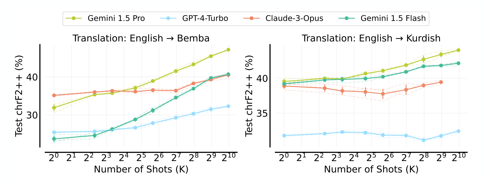
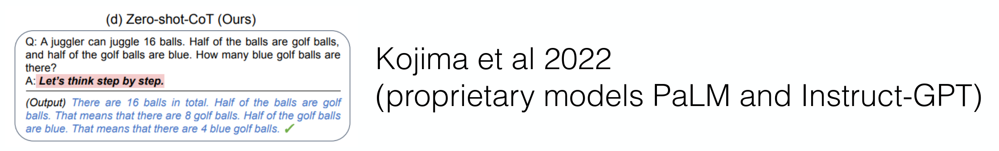
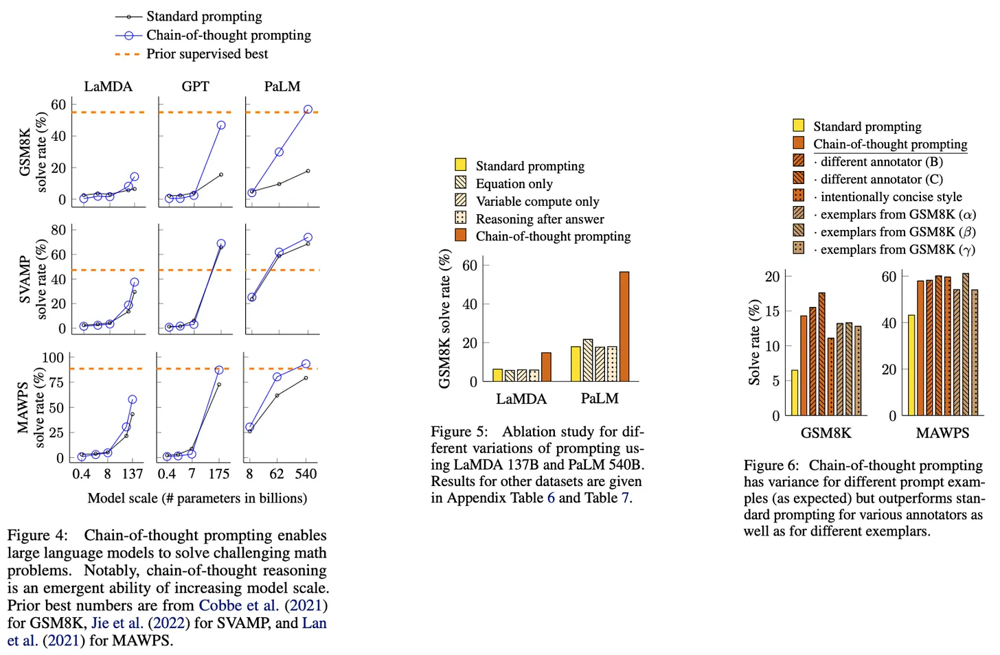
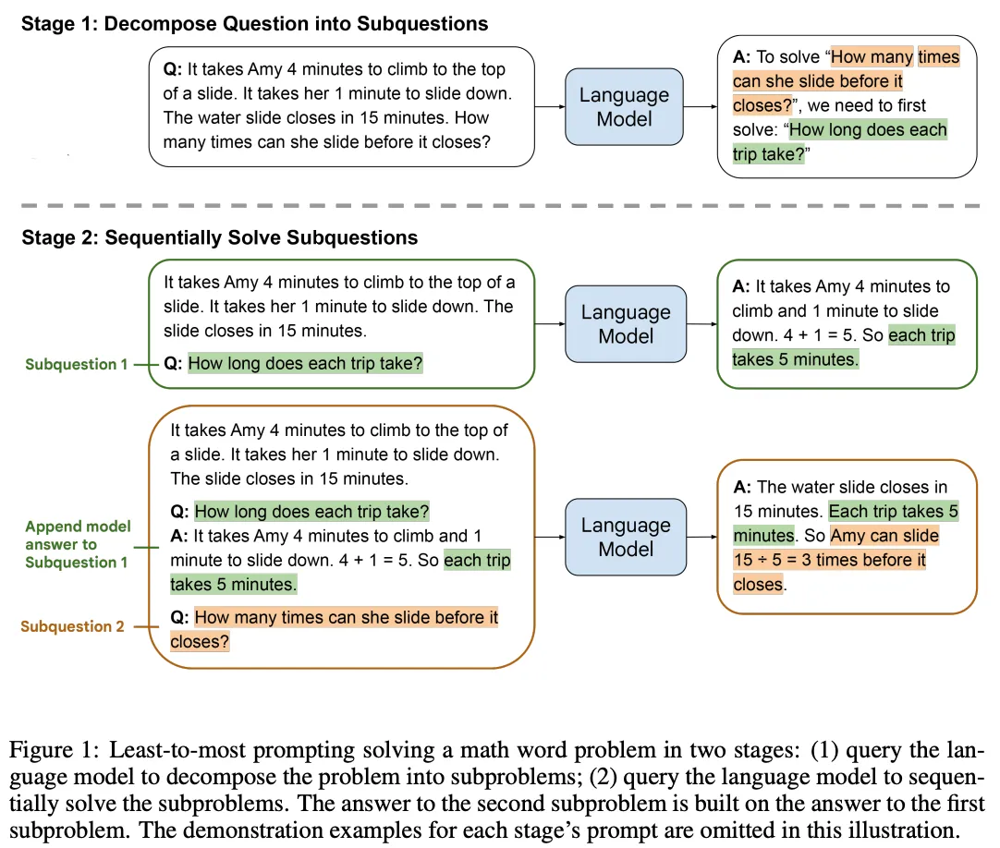
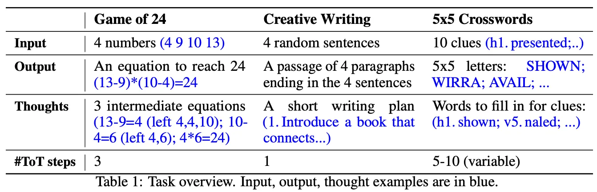

Reasoning in LLMs
Large Language Models : A Hands-on Approach
Prompting
Prompting is the process of designing input text to elicit desired outputs from a language model.
\(p_\theta(y|f(x))\) is the probability of output \(y\) given input \(x\) under model parameters \(\theta\).
x : “I love LLMs”
f(x) : “Translate to French: I love LLMs”
y : “J’aime les LLMs”
Prompt Components
Most prompts consists of the following components:

Zero Shot Prompting
Zero-Shot Prompting
- when you provide a task description and input without any examples
Prompt
- f(x:instruction) = “Translate to French: I love LLMs”

Few Shot Prompting
Few-Shot Prompting
when you provide a task description, input, and a few examples of input-output pairs.
provide
(x,y)examples in the promptPrompt: \(f(x_{test}; instruction, [(x, y)_1, \ldots, (x, y)_K])\)
Output:
y_test
Example:
Few-shot prompting is a powerful technique that allows the model to learn from examples without any parameter updates, often referred to as “in-context learning”.
In-context Learning
In-context Learning - the ability of a language model to learn and perform tasks based on the context provided in the input prompt, without any parameter updates.
- ICL: provide
(input, output)pairs as examples
- Ability to leverage many examples varies by model size and architecture

Chain of Thought Prompting
Wei et al. (2022)
Encourage the model to generate intermediate reasoning steps before giving the final answer.
Approach: Provide examples in the prompt that include the reasoning process, or explicitly ask the model to “think step by step”.
CoT with examples (few shot CoT)

Chain of Thought Prompting
- Models can generate reasoning steps even without examples

Chain of thought data in pretraining corpus may contribute to this ability, but explicit prompting can enhance it significantly.
System prompts that encourage step-by-step reasoning can also improve performance on complex tasks, even without few-shot examples.
CoT Benefits

CoT Benefits
CoT prompting can significantly improve performance on complex reasoning tasks, especially as model size increases.
Interpretability: the LLM’s generated chain of thought can be used to better understand the model’s final answer.
Applicability: CoT prompting can be used for any task that can be solved by humans via language.
Prompting: no training or fine-tuning is required of any LLMs. We can just insert a few CoT examples into the prompt!
CoT - Zeroshot
- Even without examples, simply asking the model to “think step by step” can improve performance on reasoning tasks:

CoT - Self-Consistency
- Instead of generating a single chain of thought, generate multiple reasoning paths and take a majority vote on the final answer:

CoT - Least-to-Most Prompting
- Decompose a complex problem into a sequence of simpler subproblems, and solve them in order:

Limitations of Linear CoT
- CoT follows left to right reasoning, but some problems may require exploring multiple reasoning paths in parallel, backtracking, lookahead or revisiting previous steps
- No backtracking: Once a step is generated, the model cannot revise it
- Local error propagation: Early arithmetic errors cascade irreversibly
- Exploration vs. Exploitation: Single path cannot explore alternative solution strategies
Tree of Thoughts (ToT) Prompting
- Similar to Least to Most, but with more flexibility in how the subproblems are defined and solved

Tree of Thoughts (ToT) Prompting
- ToT allows for this by maintaining a tree of possible reasoning paths and exploring them systematically

ToT Example
MODEL = "gpt-5.3"
SYSTEM_PROMPT = """You are an expert problem solver using Tree-of-Thought reasoning."""
USER_PROMPT = """
Using numbers 3, 7, 9, 25, reach 24 using +, -, *, /.
At each step:
1. Propose 3 candidate next operations
2. Evaluate each (score 1-10)
3. Pick the best and continue
Be structured and concise.
"""
def generate_thought(state):
response = client.chat.completions.create(
model=MODEL,
messages=[
{"role": "system", "content": SYSTEM_PROMPT},
{"role": "user", "content": state}
],
temperature=0.7,
)
return response.choices[0].message.content
def tree_of_thought(max_steps=5):
state = USER_PROMPT
for step in range(max_steps):
print(f"\n--- Step {step+1} ---")
output = generate_thought(state)
print(output)
# Append reasoning to state (this is the "tree expansion")
state += "\n" + output
return state
if __name__ == "__main__":
final_trace = tree_of_thought()ToT Examples

Reasoning Landscape
The System 1 / System 2 in LLMs
Modern LLMs exhibit two distinct operational modes that mirror Kahneman’s cognitive frameworks:
System 1 : Intuitive Pattern Matching
- Immediate next-token prediction
- Style transfer, translation, pattern completion
- “The capital of France is ___” ->
"Paris"
System 2 : Deliberate Reasoning
- Multi-step computation requiring working memory
- Mathematical derivation, logical deduction, multi-hop retrieval
- “If a train travels 60 km/h for 45 min then 80 km/h for 90 min, what is the average speed?”
Why Does Externalizing Thought Help? (Computation-Depth View)
A standard transformer has a fixed computation graph per token: \(L\) layers × \(H\) heads.
- Each forward pass has bounded computation depth
- Problems requiring more than \(O(L)\) serial steps cannot be solved in one pass
- This holds regardless of model size
CoT : Emitting intermediate tokens lets the model recurse through its own weights
- Turns a feed-forward network into something closer to a bounded-depth RNN
- Each new token’s forward pass can read all prior intermediate tokens via attention
Theoretical results:
- Feng et al. (2023): Constant-depth transformers provably cannot solve arithmetic or dynamic programming in one pass, but can with CoT of length linear in the input.
Takeaway: CoT converts a fixed-depth parallel computer into an adaptive-depth one — the theoretical justification for why reasoning-heavy tasks demand long output sequences.
Why does CoT work at all?
1. Distributional shift
- The trigger phrase shifts the output distribution toward text resembling worked examples from pre-training (textbooks, Stack Exchange, tutoring dialogues)
2. Scratchpad as adaptive compute
- Each emitted token grants the model another forward pass conditioned on all prior tokens
- The prompt effectively unlocks the computation-depth argument
These are not mutually exclusive : CoT works because
- the model has seen such traces during pre-training and
- emitting them unlocks additional serial compute.
CoT Limitations
The Faithfulness Problem
Unfaithful Reasoning: CoT may be post-hoc rather than true computation trace.
Intervention studies:
Suppression: Add “…therefore [wrong answer]” to CoT -> Model often follows conclusion despite contradictory reasoning
Augmentation: Add factual context mid-generation -> Model ignores new information if already committed to path
Self-Correction Paradox
- Without external feedback, asking “Are you sure?” often degrades performance
- Effective self-correction requires either:
- External verification (code execution, search)
- Explicit training on self-refinement (RL with process rewards)
Modern “Thinking” Models (o3, R1, etc.)
Key characteristics:
Native latent reasoning: Unlike prompt-based CoT, reasoning tokens are produced by the model by default (hidden or shown to users)
Self-correction behaviors: Models exhibit “wait, let me reconsider” patterns -> not manually prompted, learned via RL
Length generalization: Can maintain coherent reasoning over 100K+ tokens
Systems implications:
- KV-cache pressure becomes extreme for long contexts
- Prefix caching essential for long-context reasoning
- Quantization affects reasoning fidelity more than factual recall
The Test-Time Compute
From Prompt Engineering to Compute Scaling
Recent reasoning models represent a paradigm shift:
Old paradigm
Fixed inference compute, vary prompts
New paradigm
Scale test-time compute dynamically with problem difficulty
Examples:
- OpenAI o1/o3
- DeepSeek-R1
- QwQ
- Claude with extended thinking
- Gemini 2.5 Thinking
“More thinking ≠ better results”
From Reasoning to Agents
Everything so far has been about a single turn:
- a query goes in, reasoning happens, an answer comes out.
Agents generalize this to multi-turn, multi-action loops over a stateful environment.
Reasoning is still the core : the model must reason about which action to take, how to interpret observations, and when to stop.
From Reasoning to Agents
The agent patterns are direct extensions of reasoning primitives:
ReAct -> the base agent loop. Every modern framework (LangGraph, OpenAI Agents SDK, Claude Agent SDK, smolagents) is ReAct with better plumbing.
Tree of Thoughts planning agents. Tree search over action sequences instead of reasoning steps
Self-Consistency -> multi-agent debate / self-refinement
Reasoning-as-controller -> tool routing and subagent dispatch.
What Agents Add on Top of Reasoning
| Reasoning | Agents |
|---|---|
| Reason over text context | Reason over text + environment state (files, DB, web) |
| Emit an answer token | Emit a tool call or an answer |
One pass, halt on </answer> |
Loop: think -> act -> observe until goal or budget exhausted |
| Verifier scores a single trace | Verifier scores a trajectory (sequence of actions) |
| CoT as internal scratchpad | CoT + external memory (scratchpad files, vector store, episodic buffer) |
| Best-of-N over answers | Best-of-N over plans or trajectories |
What Reasoning Models Enable for Agents
Before reasoning models, long-horizon agents were fragile - they drifted, forgot their plan, chased dead ends, and failed to recover from tool errors.
1. Plan coherence over long horizons
- 100K-token reasoning contexts let a single agent step “think through” a 20-action plan before committing.
2. Error recovery
- A model trained to self-correct its math will self-correct a failed API call. The same mechanism transfers.
3. Budgeted deliberation
- Exposing a reasoning-token budget gives agent designers a first-class knob for trading latency against reliability on a per-step basis — previously impossible with fixed-compute LLMs.
An agent is a reasoning model wired to (a) a tool interface, (b) an environment that provides observations, and (c) a loop that runs until a halting condition. Everything else — memory, planning, multi-agent — is optional embellishment on that core.
ReAct: Interleaving Reasoning and Acting
The Calculator Agent
Pure CoT fails on “What is the 47th Fibonacci number?” due to arithmetic errors in large-number addition. ReAct solves this via tool-augmented reasoning:
ReAct Loop Pattern:
Thought: I need to calculate the 47th Fibonacci number.
This requires precise arithmetic. I should use the calculator tool.
Action: calculator(fibonacci, n=47)
Observation: 2971215073
Thought: The calculator returned 2971215073.
Let me verify this is reasonable... F(47) should be approximately phi^47/sqrt(5) ≈ 2.9 billion.
This checks out.
Answer: 2971215073